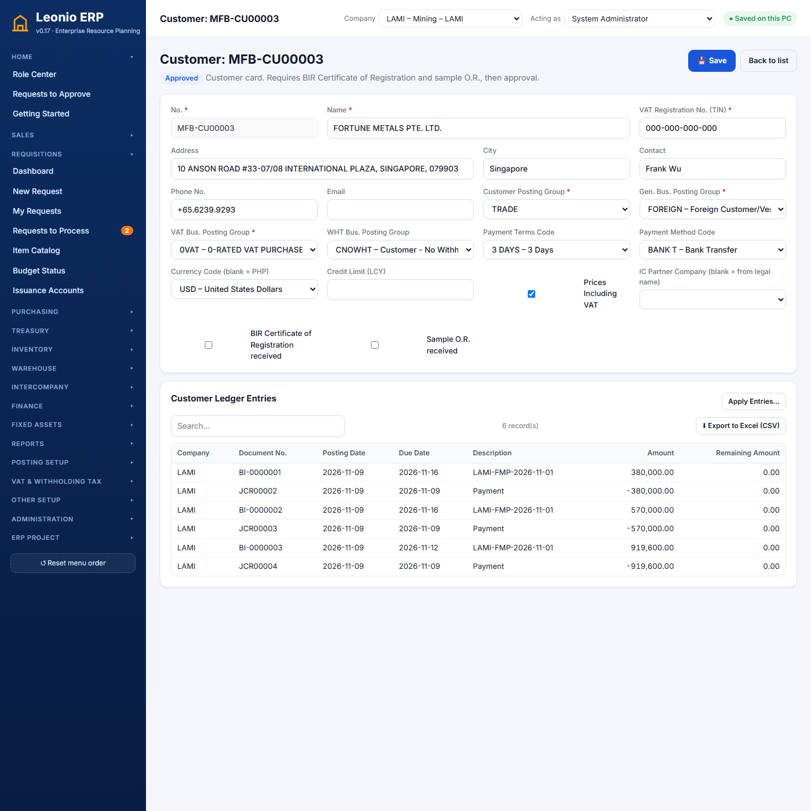
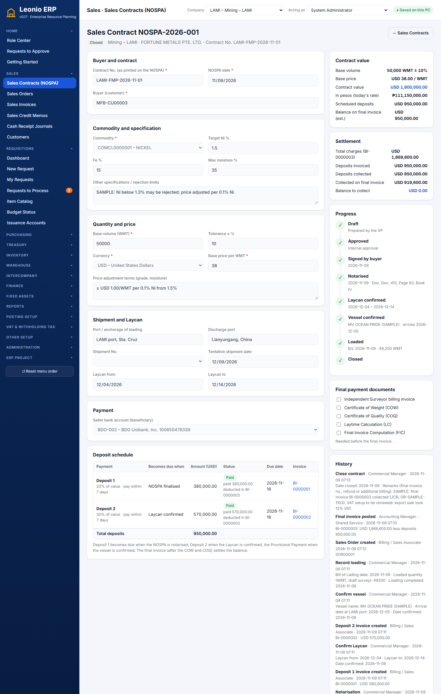
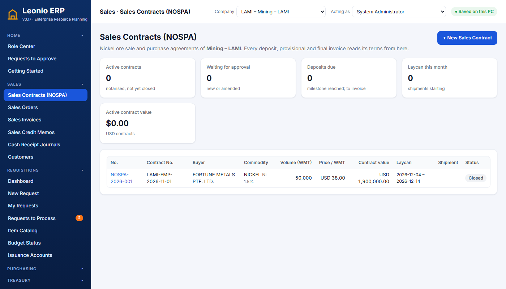
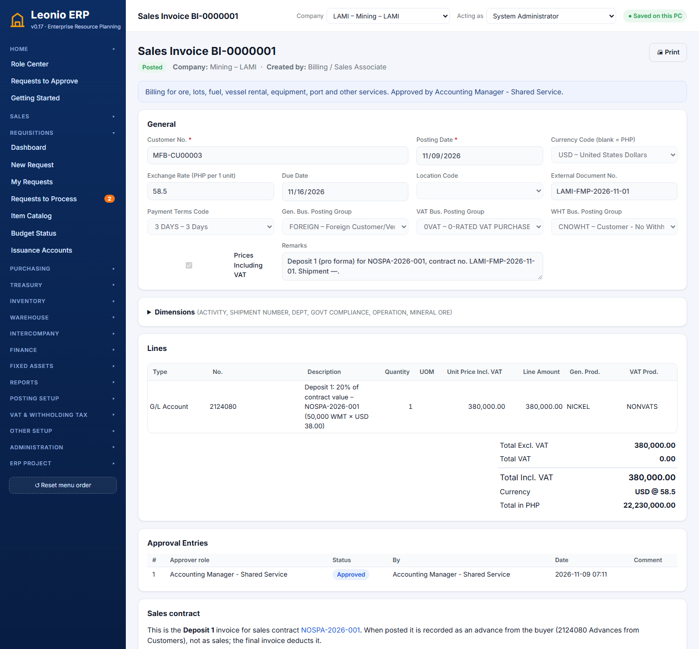
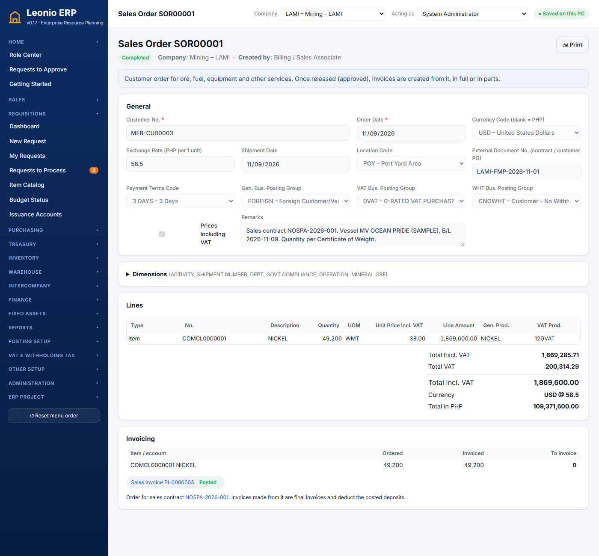
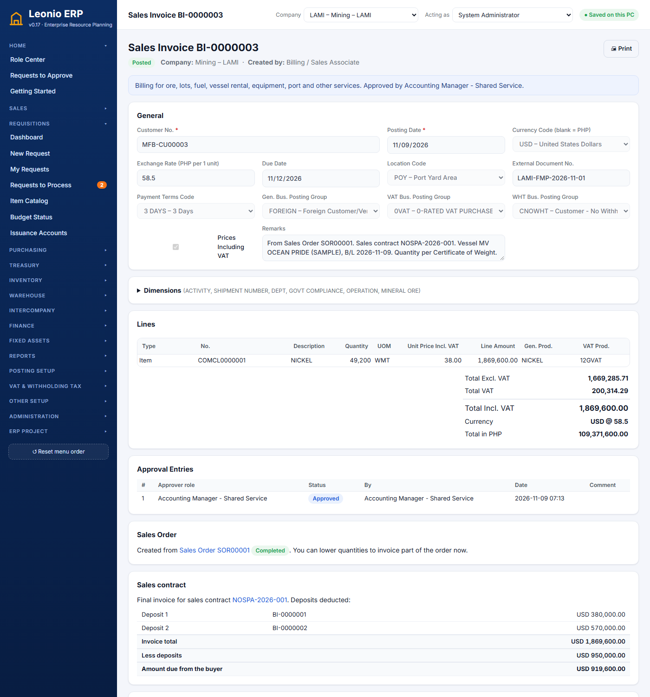
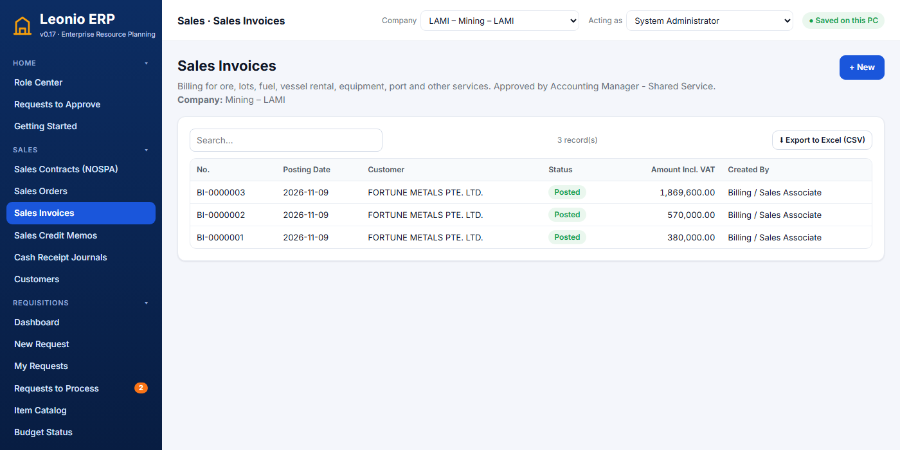
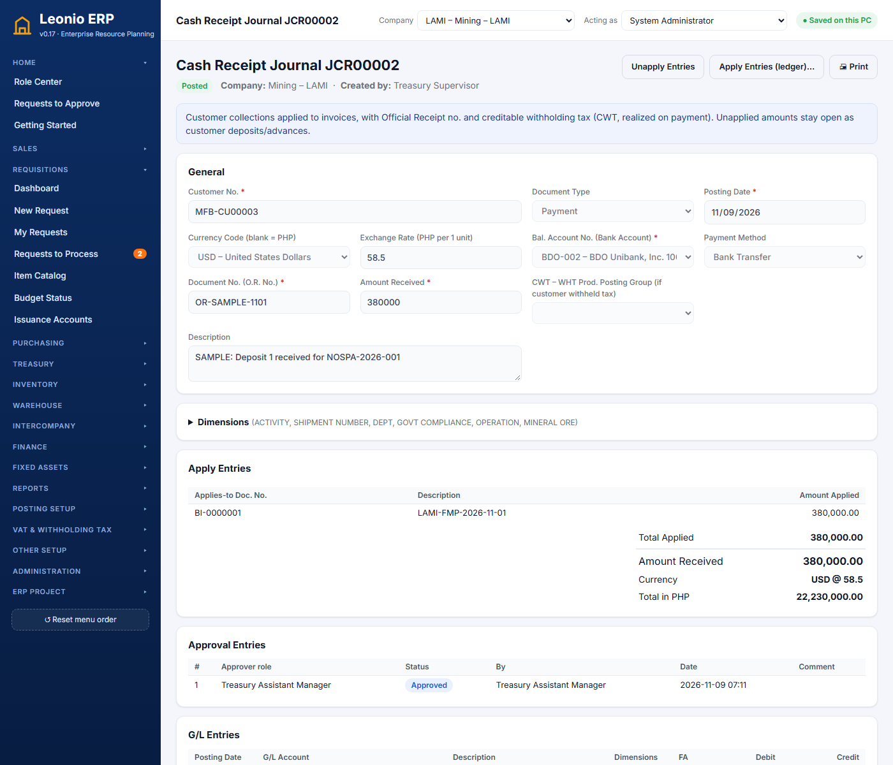
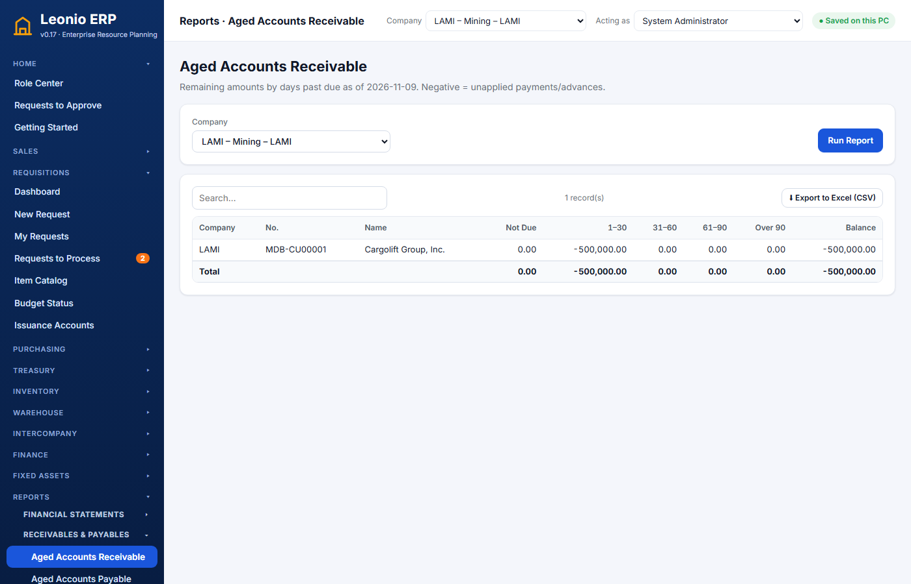

Leonio ERP – Order-to-Cash
How the ERP sells ore and collects the money: from the sales contract (NOSPA) through deposit invoices, loading, the sales order and the final invoice to the buyer's payments. Same form as the Procure-to-Pay volume. Screens and figures come from a sample export sale run in company LAMI: NOSPA-2026-001, 50,000 WMT nickel ore to Fortune Metals Pte. Ltd. at USD 38/WMT, sample rate ₱58.50 per USD.
LEO-O2C-00Overview: the whole chain
NOSPA-YYYY-###→Deposit invoicesBI-#######→CollectionsJCR#####→LoadingB/L, WMT→Sales order
SOR#####→Final invoiceBI-#######→CollectionJCR#####The sample, document by document
| Step | Document | By | USD | ₱ (58.50) |
|---|---|---|---|---|
| Contract, approved, signed, notarised | NOSPA-2026-001 | Commercial Manager; President approves | 1,900,000.00 | 111,150,000.00 |
| Deposit 1 (20%, due when notarised) | BI-0000001 | Billing; Accounting Manager approves | 380,000.00 | 22,230,000.00 |
| Deposit 1 received (BDO-002, USD) | JCR00002 | Treasury Supervisor; Treasury Asst. Manager approves | 380,000.00 | 22,230,000.00 |
| Deposit 2 (30%, due when Laycan confirmed) | BI-0000002 / JCR00003 | same | 570,000.00 | 33,345,000.00 |
| Vessel MV Ocean Pride confirmed; 49,200 WMT loaded | NOSPA-2026-001 | Commercial Manager | ||
| Sales order from the contract (released) | SOR00001 | Billing | 1,869,600.00 | |
| Final invoice 49,200 × 38, deposits deducted | BI-0000003 | Billing; Accounting Manager approves | 1,869,600.00 | 109,371,600.00 |
| Balance received | JCR00004 | Treasury | 919,600.00 | 53,796,600.00 |
| Contract closed | NOSPA-2026-001 | Commercial Manager | balance 0.00 |
Approval chains in use
| Document | Steps |
|---|---|
| Sales contract (NOSPA) and its amendments | President |
| Sales order | none: released when sent (add steps in the Approval Designer if needed) |
| Sales invoice (deposit, final, other) | Accounting Manager – Shared Service |
| Sales credit memo | Accounting Manager – Shared Service |
| Cash receipt (collection) | Treasury Assistant Manager |
| New customer card | ICT Head, Accounting Manager – Shared Service |
LEO-O2C-01Customers
MDB-CU…, Foreign MFB-CU…, Non-trade ARNT-…, AR Others AROTH-CU…) and need approval. The card shows the customer ledger.Screens

Function list
| # | Function | Screen | Roles | Status |
|---|---|---|---|---|
| F-01-01 | Customer card with number series, TIN duplicate check, approval of new customers | Sales → Customers | customers C; approvers customers A | ✔ |
| F-01-02 | Customer ledger on the card; apply entries | Customer card | customers V; cr P | ✔ |
| F-01-03 | Approval of customer bank-detail changes (as for vendors) | — | — | ○ |
| F-01-04 | Credit limit check on orders and invoices | — | — | ○ |
LEO-O2C-02Sales contract (NOSPA)
Screens


Function list
| # | Function | Screen | Roles | Status |
|---|---|---|---|---|
| F-02-01 | Draft the contract: buyer, commodity (WMT items), grade, volume ± tolerance, currency, price, ports, Laycan, shipment no., seller bank | Sales → Sales Contracts → New | Commercial Manager | ✔ |
| F-02-02 | Deposit schedule: Deposit 1 / Deposit 2 / Provisional, % of value or fixed amount, trigger milestone, days to pay | Contract page | Commercial Manager | ✔ |
| F-02-03 | Approve / reject | Contract page / Requests to Approve | President (nospa A) | ✔ |
| F-02-04 | Milestones: buyer signature, notarisation (Active), Laycan, vessel, loading (B/L date, WMT), close | Contract page | Commercial Manager | ✔ |
| F-02-05 | Amendment with letter no. and reason, approved again; change list kept | Contract page → Amend | Commercial Manager; President | ✔ |
| F-02-06 | Settlement: charges, deposits invoiced and collected, balance to collect or refund | Contract page | nospa V | ✔ |
| F-02-07 | Final payment documents checklist (surveyor invoice, COW, COQ, laytime, FIC) | Contract page | nospa C | ◐ ticked by hand; not required before the final invoice |
| F-02-08 | Price adjustment for grade and moisture computed from the COQ | — | — | ○ terms are text; adjust the invoice price by hand |
User stories
- Required: contract no. (unique per company), date, buyer, commodity, volume above 0, currency, price above 0, at least one deposit.
- Contract value = volume × price. Deposits may not add up to more than the value. Laycan "to" may not be before "from".
- The seller bank must be in the contract currency (a USD contract needs a USD account such as BDO-002).
- Number
NOSPA-YYYY-###. The shipment no. becomes the SHIPMENT NUMBER dimension on every invoice.
- Deposit status: Not yet due → Due (its milestone is recorded; due date = milestone date + days) → Invoice draft / pending / approved → Invoiced → Partly paid → Paid.
- Default triggers: Deposit 1 when notarised, Deposit 2 when the Laycan is confirmed, Provisional when the vessel is confirmed.
- After approval only grade, volume, price, ports, shipment, Laycan, bank and deposits can change, and only through an amendment with a reason (and letter no.).
- The amendment is approved like the contract; the person who submitted it cannot approve it. Rejected amendments leave the contract unchanged.
Status flow
stateDiagram-v2 [*] --> Draft Draft --> PendingApproval: Submit PendingApproval --> Approved: President PendingApproval --> Draft: rejected Approved --> Signed: buyer signs Signed --> Active: notarised (Deposit 1 due) Active --> Active: Laycan (Deposit 2 due), vessel, loading Active --> Closed: final invoice settled Draft --> Cancelled Active --> Cancelled
Accounting
None on the contract itself.
LEO-O2C-03Deposit invoices
Screens

Function list
| # | Function | Screen | Roles | Status |
|---|---|---|---|---|
| F-03-01 | Create the deposit invoice from a due deposit (one per deposit) | Contract → Deposit schedule | Billing / GA Supervisor / Acctg Manager | ✔ |
| F-03-02 | VAT from the "Contract Deposit – Foreign / Local" item (zero for foreign buyers) | automatic | — | ✔ |
| F-03-03 | Approve and post; due date from the deposit schedule | Sales invoice page | si A, si P | ✔ |
| F-03-04 | Print as pro forma invoice for the buyer | Sales invoice → Print | si V | ◐ standard invoice print |
Accounting entries (BI-0000001, USD 380,000 at 58.50)
| Line | Account (LAMI) | Debit ₱ | Credit ₱ |
|---|---|---|---|
| Receivable from the buyer | 1120010 Accounts Receivable – Trade | 22,230,000.00 | |
| Advance from the customer | 2124080 Advances from Customers | 22,230,000.00 |
LEO-O2C-04Sales orders
Screens

Function list
| # | Function | Screen | Roles | Status |
|---|---|---|---|---|
| F-04-01 | Create Sales Order from the contract after loading (loaded WMT × contract price) | Contract page | Billing / Commercial Manager | ✔ |
| F-04-02 | Sales order for other sales (fuel, rentals, services) with lines, currency, location, terms | Sales → Sales Orders → New | so C | ✔ |
| F-04-03 | Release (approval if rules exist) | SO page | so C / so A | ✔ |
| F-04-04 | Create Sales Invoice for the quantity still to invoice; lower it to invoice part now | SO page | si C | ✔ |
User stories
- Only one open (unposted) invoice per order at a time. An invoice line may not exceed the quantity still to invoice.
- Posting adds to Quantity Invoiced; the order becomes Partially Invoiced, then Completed. No 50 WMT per-invoice limit (decision 21).
Status flow
stateDiagram-v2 [*] --> Draft Draft --> Approved: Send (released; no steps today) Approved --> PartiallyInvoiced: part posted Approved --> Completed: all posted PartiallyInvoiced --> Completed
LEO-O2C-05Sales invoices and credit memos
Screens


Function list
| # | Function | Screen | Roles | Status |
|---|---|---|---|---|
| F-05-01 | Sales invoice with item, service, G/L and fixed asset lines; VAT by posting setup; foreign currency | Sales → Sales Invoices | si C | ✔ |
| F-05-02 | Final invoice deducts every posted deposit invoice of the contract | automatic on posting | si P | ✔ |
| F-05-03 | Approve, post; cost of sales from inventory (average / FIFO per item) | Sales invoice page | si A, si P | ✔ |
| F-05-04 | Sales credit memo | Sales → Sales Credit Memos | si C P | ✔ |
| F-05-05 | Intercompany: a sales invoice to an affiliate sends a purchase invoice to its inbox | Intercompany | ic C P | ✔ |
| F-05-06 | BIR-registered invoice series and invoice print (CAS) | — | — | ○ |
Accounting entries (BI-0000003, USD 1,869,600 at 58.50)
| Line | Account (LAMI) | Debit ₱ | Credit ₱ |
|---|---|---|---|
| Receivable from the buyer | 1120010 Accounts Receivable – Trade | 109,371,600.01 | |
| Sale of nickel ore | 4110110 Sales (General Posting Setup FOREIGN × NICKEL) | 97,653,214.04 | |
| Output VAT 12% (see finding O2C-99) | 2122110 Output VAT | 11,718,385.97 | |
| Cost of the ore sold (49,200 WMT) | 5410010 Cost of Sales | 59,040,000.00 | |
| Ore out of inventory | 1131100 Inventory – ore | 59,040,000.00 | |
| Deduct Deposit 1 (BI-0000001) | 2124080 Advances from Customers / 1120010 AR | 22,230,000.00 | 22,230,000.00 |
| Deduct Deposit 2 (BI-0000002) | 2124080 Advances from Customers / 1120010 AR | 33,345,000.00 | 33,345,000.00 |
Open balance on the buyer after posting: USD 919,600 (1,869,600 − 380,000 − 570,000).
LEO-O2C-06Collections (Cash Receipt Journal)
Screens

Function list
| # | Function | Screen | Roles | Status |
|---|---|---|---|---|
| F-06-01 | Cash receipt: customer, bank, method, O.R. no., amount, apply entries | Treasury → Cash Receipt Journals | cr C | ✔ |
| F-06-02 | Creditable withholding tax (CWT) by WHT product group | Cash receipt page | cr C | ✔ |
| F-06-03 | Approve, post; realized exchange gain / loss for foreign currency | Cash receipt page | cr A, cr P | ✔ |
| F-06-04 | Customer deposit (unapplied), apply later, unapply, customer refund | Cash receipt page | cr P | ✔ |
| F-06-05 | Unidentified bank deposit → draft cash receipt from the bank statement | Treasury → Bank Statement Import | bank C | ✔ |
| F-06-06 | Record the 2307 certificates received from customers (for the SAWT) | — | — | ○ |
User stories
- O.R. no. and amount are required. Amount received + CWT may not be less than the total applied; applied amounts may not exceed an invoice's remaining amount; currencies must match.
- Receivables are cleared at the rate each invoice was booked at; any difference to the receipt date's rate goes to realized exchange gain or loss.
- The bank entry feeds the bank reconciliation and the daily cash position.
Accounting entries (JCR00004, USD 919,600 at 58.50)
| Line | Account (LAMI) | Debit ₱ | Credit ₱ |
|---|---|---|---|
| Bank BDO-002 (USD) | 1110012 Cash in Bank – USD | 53,796,600.00 | |
| Clear the receivable | 1120010 Accounts Receivable – Trade | 53,796,600.00 |
A domestic customer that withholds 1% or 2% adds a debit to the prepaid (creditable) withholding tax account of the WHT Posting Setup.
LEO-O2C-07Receivables reports
Screens

| # | Function | Screen | Roles | Status |
|---|---|---|---|---|
| F-07-01 | Aged Accounts Receivable, all companies or one; Excel export | Reports → Aged Accounts Receivable | reports V | ✔ |
| F-07-02 | Statement of account to send to the customer | — | — | ○ |
| F-07-03 | Sales per shipment / contract report (WMT, USD, deposits, balance) | — | — | ○ |
LEO-O2C-99Findings and open items (as of v0.17)
0VAT × item group 12GVAT (the nickel item) is 12%. Zero-rating only applies with item groups 0GVAT / 0SVAT. In addition, the buyer's card has "Prices Including VAT" ticked, so USD 38/WMT was treated as including VAT and revenue came out ₱97.65M instead of ₱109.37M. The ERP applied the setup as given. Accounting should decide: zero-rated VAT group on export invoices (or on the ore item for foreign buyers), and untick "Prices Including VAT" for foreign buyers. The sample invoice BI-0000003 was left as posted.- Ore production is not in the ERP. Stock for the sample was put in with an item journal (JIT00001, 50,000 WMT at a sample cost of ₱1,200/WMT). Mining production and hauling to the port yard are planned under the BU modules.
- Ore stock adjustments have no P&L effect. The Inventory Adjmt. account for nickel ore is the inventory account itself (1131100).
- The USD rate is a sample (₱58.50 from 1 Nov 2026), entered for this documentation. Enter real rates under Finance → Currency Exchange Rates.
- Final payment documents (COW, COQ, surveyor invoice, laytime, FIC) are a checklist only; the final invoice can be made without them.
- Grade and moisture price adjustments are written as text on the contract and applied by hand on the invoice.
- Not built yet: customer bank-change approval, credit limits, statement of account, BIR-registered invoice series and print, 2307 received from customers (SAWT), file attachments, logins.